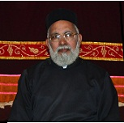

Vicar's Message
"Jesus answered (to Thomas), I am the Way and the Truth and the Life. No one comes to the Father except through me." St. John 14:6
Welcome to our Church Website. As the Vicar of the St. Thomas Indian Orthodox Church of Baltimore, it is my pleasure and privilege to welcome everyone to our website. Please have a tour with the various links and informative pages. Our church is a part of the Malankara (Indian) Orthodox Church, which has the great heritage and tradition based on the Holy Bible and the Church Fathers. The Church was founded in India on 52 A.D, by St. Thomas, one of the twelve apostles of Jesus Christ. The hierarchical head of the Orthodox Church in India is His Holiness Baselius Marthoma Paulose II. His Holiness is known as the Catholicos, which means the Universal Father. The Church has dioceses in India and abroad.
The history of St. Thomas Orthodox Church of Baltimore goes back to 1960's when a few Malayalee families, without denominational differences, met together for occasional prayer meetings. By considerable progress through years of blessings, a new church building was constructed and dedicated in May 12, 2001. Thus, the cherished dream of the faithful members of this parish became a reality. We praise the Holy name of God and His Son Jesus Christ, the guidance of the Holy Spirit and the great intercession of our patron Saint Thomas, for this gift given for the blessings of this community. The Church provides opportunities for believers to come together for worship and fellowship. We have regular prayer meetings, occasional family get-togethers, Bible Study groups, Sunday School, MGOCSM (Mar Gregorios Orthodox Christian Student Movement), OVBS (Orthodox Vacation Bible School) and Martha Mariam Samajam (Women's Meeting), which provide spiritual growth to the members. We also participate in the Ecumenical Council of Kerala Christian Churches in Baltimore-Washington, and its clergy fellowship.
Our Church, through this Website, endeavors to give access to the public, the details about the activities of this Church. We hope this will help our visitors to grow up spiritually by the abundance of God's Grace. As the Vicar, I have great pleasure to greet and welcome you all who visit our Website and join us for Orthodox Christian worship and doctrinal values.
I pray for God's choicest blessings to be showered upon all our Website visitors.
Thank you, May God Bless You abundantly.
With Love and Prayers, Yours in our Lord's Service,
Rev.Fr.K.P.Varghese(President/Vicar)9 Keen Mill CourtBaltimore, MD 21228410-247-9861